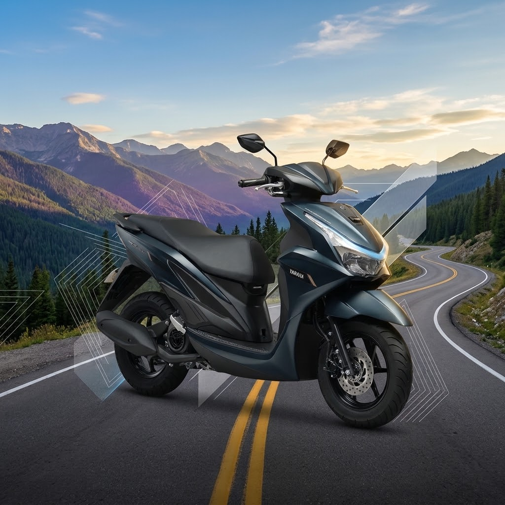

I am Jim Lawrence Castillo
A Full-Stack Web Developer


"I am an aspiring Full-Stack Web Developer. I love building modern web layouts and exploring AI & workflow automation. I ❤️ coffee, learning new tech, and capturing motorcycle ride motovlogs."
Proficient in modern HTML5 and CSS3, with a strong foundation in semantic HTML principles for clean, accessible structure. Skilled in developing fully responsive designs and crafting advanced modern layouts utilizing both Flexbox and CSS Grid to build seamless, adaptive user interfaces across all devices.
I am a full-stack developer experienced in building modern web applications with JavaScript (ES6+), HTML5, and CSS3. My front-end expertise centers on crafting responsive, component-based UIs using React, while on the back end, I specialize in building robust RESTful APIs with Node.js and Express.js paired with structured PostgreSQL relational databases. Additionally, I have hands-on experience in the Web3 ecosystem, integrating smart contracts and developing decentralized applications (DApps) using Web3.js and Ethers.js.
Skilled in streamlining business processes and optimizing development workflows through workflow and AI automation tools like n8n, Zapier, and Make. I leverage a robust toolkit—including Visual Studio Code, Git, GitHub, and Browser Developer Tools—to write clean code, manage version control, debug efficiently, and deploy scalable solutions seamlessly.
May 2024 – December 2025
November 2020 – March 2025
July 2018 – October 2020

Zapier Interface, Triggers & Actions, Formatter by Zapier, Filters, Paths, Loops, Delays, Sub-Zaps, Webhooks, AI & Human-in-the-Loop Workflows .

Interface & Scenario Design, Triggers & Actions, Filters, Data Manipulation, Advanced Routing, HTTP Requests, Application Integrations, AI Agents.

Interface, Workflow & Node Architecture, Working with Data, Triggers & Actions, Conditions & Branching, Loops & Data Merging, API Integration, HTTP Requests, MCP Servers & Clients, AI Agents, RAG Workflows.
Naic Elementary School, Naic, Cavite, Philippines.
Western Colleges, Naic, Cavite, Philippines.
Cavite State University, Rosario, Cavite, Philippines.